vignettes/modelling.Rmd
modelling.RmdModelling provides the essential data mining step for extracting biological information and explanatory metabolome features from a data set relating to the experimental conditions. metabolyseR provides a number of both univariate and multivariate methods for data mining.
For an introduction to the usage of metabolyseR for both exploratory and routine analyses, see the introduction vignette using:
vignette('introduction','metabolyseR')To further supplement this document, a quick start example analysis is also available as a vignette:
vignette('quick_start','metabolyseR')To begin, the package can be loaded using:
library(metabolyseR)
#>
#> Attaching package: 'metabolyseR'
#> The following object is masked from 'package:stats':
#>
#> anova
#> The following objects are masked from 'package:base':
#>
#> raw, splitThe examples used here will use the abr1 data set from the metaboData package. This is nominal mass flow-injection mass spectrometry (FI-MS) fingerprinting data from a plant-pathogen infection time course experiment. The pipe %>% from the magrittr package will also be used. The example data can be loaded using:
Only the negative acquisition mode data (abr1$neg) will be used along with the sample meta-information (abr1$fact). Create an AnalysisData class object, assigned to the variable d, using the following:
d <- analysisData(abr1$neg[,1:500],abr1$fact)
print(d)
#>
#> AnalysisData object containing:
#>
#> Samples: 120
#> Features: 500
#> Info: 9As can be seen above the data set contains a total of 120 samples and 500 features.
The package supports parallel processing using the future package.
By default, processing by metabolyseR will be done seqentially. However, parallel processing can be activated, prior to analysis, by specifying a parallel implementation using plan(). The following example specifies using the multisession implementation (muliple background R sessions) with two worker processes.
plan(future::multisession,workers = 2)See the future package documentation for more information on the types of parallel implementations that are available.
Random forest is a versatile ensemble machine learning approach based on forests of decision trees for multivariate data mining. This can include unsupervised analysis, classification of discrete response variables and regression of continuous responses.
Random forest can be performed in metabolyseR using the randomForest() method. For further details on the arguments for using this function, see ?randomForest. This implementation of random forest in metabolyseR utilises the randomForest package. See ?randomForest::randomForest for more information about that implementation.
The unsupervised random forest approach can be useful starting point for analysis in any experimental context. It can be used to give a general overview of the structure of the data and to identify any possible problems. These could include situations such as the presence of outliers samples or splits in the data caused by the impact of analytical or sample preparation factors. Unsupervised random forest can have advantages in these assessments over other approaches such as Principle Component Analysis (PCA). It is less sensitive to the effect of a single feature that in fact could have little overall impact relative to the other hundreds that could be present in a data set.
The examples below will show the use of unsupervised random forest for assessing the general structure of the example data set and the presence of outlier samples.
Unsupervised random forest can be performed by setting the cls argument of randomForest() to NULL:
unsupervised_rf <- d %>%
randomForest(cls = NULL)The type of random forest that has been performed can be checked using the type method.
type(unsupervised_rf)
#> [1] "unsupervised"Or by printing the results object.
unsupervised_rf
#>
#> Unsupervised random forest
#>
#> Samples: 120
#> Features: 500Firstly, the presence of outlier samples will be assessed. A multidimensional scaling (MDS) plot can be used to visualise the relative proximity of the observations, as shown in the following. The individual points are also labelled by their injection order to enable the identification of individual samples if necessary.
plotMDS(unsupervised_rf,
cls = NULL,
label = 'injorder',
labelSize = 3,
title = 'Outlier detection')
#> Warning: ggrepel: 13 unlabeled data points (too many overlaps). Consider
#> increasing max.overlaps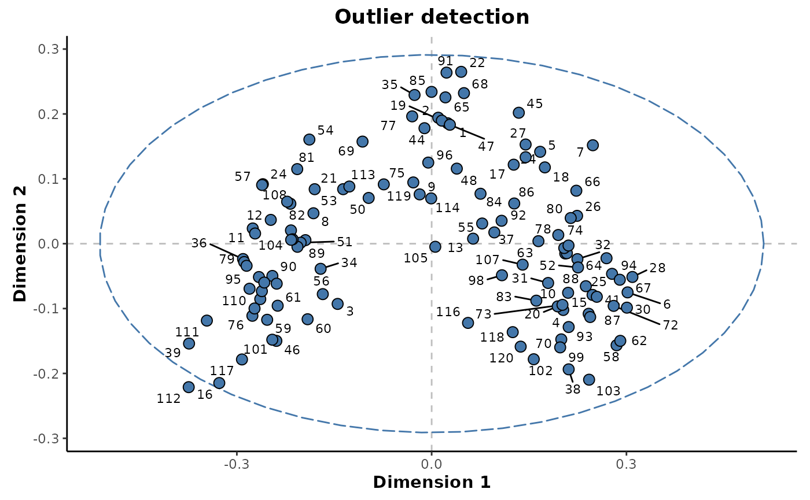
From the plot above, it can be seen a single sample lies outside the 95% confidence ellipse. It is unlikely that this sample can be considered an outlier as it’s position is as a result of the underlying class structure as opposed to differences specific to that individual sample.
The structure of these observations can be investigated further by colouring the points by a different experimental factor. This will be by the day class column which is the main experimental factor of interest in this experiment.
plotMDS(unsupervised_rf,
cls = 'day')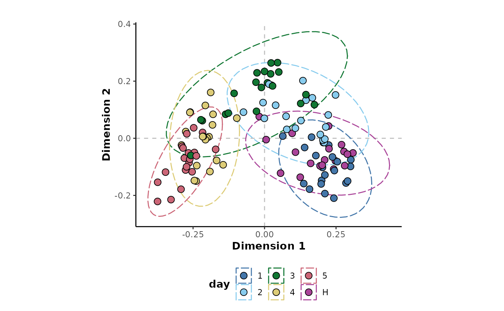
This shows that it is indeed the experimental factor of interest that is having the greatest impact on the structure of the data. The progression of the experimental time points are obvious across Dimension 1.
The available feature importance metrics for a random forest analysis can be retrieved by:
importanceMetrics(unsupervised_rf)
#> [1] "1" "2" "FalsePositiveRate"
#> [4] "MeanDecreaseAccuracy" "MeanDecreaseGini" "SelectionFrequency"And the importance values of these metrics for each feature can returned using:
importance(unsupervised_rf)
#> # A tibble: 3,000 × 3
#> Feature Metric Value
#> <chr> <chr> <dbl>
#> 1 N1 1 0
#> 2 N1 2 0
#> 3 N1 FalsePositiveRate 0.0238
#> 4 N1 MeanDecreaseAccuracy 0
#> 5 N1 MeanDecreaseGini 0
#> 6 N1 SelectionFrequency 0
#> 7 N10 1 0
#> 8 N10 2 0
#> 9 N10 FalsePositiveRate 0.0238
#> 10 N10 MeanDecreaseAccuracy 0
#> # … with 2,990 more rowsThe explanatory features for a given threshold can be extracted for any of the importance metrics. The following will extract the explanatory features below a threshold of 0.05 based on the false positive rate metric.
unsupervised_rf %>%
explanatoryFeatures(metric = "FalsePositiveRate",
threshold = 0.05)
#> # A tibble: 359 × 3
#> Feature Metric Value
#> <chr> <chr> <dbl>
#> 1 N342 FalsePositiveRate 1.31e-19
#> 2 N161 FalsePositiveRate 2.34e-16
#> 3 N341 FalsePositiveRate 6.50e-16
#> 4 N315 FalsePositiveRate 1.79e-15
#> 5 N367 FalsePositiveRate 3.47e-14
#> 6 N173 FalsePositiveRate 9.09e-14
#> 7 N385 FalsePositiveRate 9.09e-14
#> 8 N133 FalsePositiveRate 1.52e-12
#> 9 N439 FalsePositiveRate 1.52e-12
#> 10 N379 FalsePositiveRate 3.78e-12
#> # … with 349 more rowsIn this example there are 359 explanatory features.
The trend of the most highly ranked explanatory feature against the day factor can be plotted using the plotFeature() method.
unsupervised_rf %>%
plotFeature(feature = 'N425',
cls = 'day')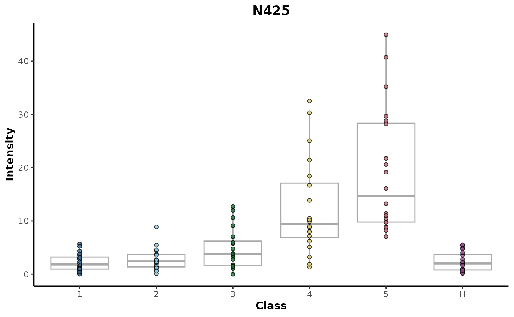
Random forest classification can be used to assess the extent of discrimination (difference) between classes of a discrete response variable. This includes both multinomial (number of classes > 2) and binary (number of classes = 2) comparisons.
In multinomial situations, the suitability of a multinomial comparison versus multiple binary comparisons can depend on the experimental context. For instance, in a treatment/control experiment that includes multiple time points, a multinomial comparison using all available classes could be useful to visualise the general structure of the data. However, it could make any extracted explanatory features difficult to reason about as to how they relate to the individual experimental time point or treatment conditions. An investigator could instead identify the binary comparisons relevant to the biological question and focus the further classification comparisons to better select for explanatory features.
In experiments with more than two classes, multinomial random forest classification can be used to assess the discrimination between the classes and give an overview of the relative structure between classes.
The example data set consists of a total of 6 classes for the day response variable.
d %>%
clsExtract(cls = 'day') %>%
unique()
#> [1] 2 3 4 1 H 5
#> Levels: 1 2 3 4 5 HMultinomial classification can be performed by:
multinomial_rf <- d %>%
randomForest(cls = 'day')
print(multinomial_rf)
#>
#> Random forest classification
#>
#> Samples: 120
#> Features: 500
#> Response: day
#> # comparisons: 1The performance of this model can be assessed using metrics based on the success of the out of bag (OOB) predictions. The performance metrics can be extracted using:
multinomial_rf %>%
metrics()
#> # A tibble: 4 × 5
#> Response Comparison .metric .estimator .estimate
#> <chr> <chr> <chr> <chr> <dbl>
#> 1 day 1~2~3~4~5~H accuracy multiclass 0.8
#> 2 day 1~2~3~4~5~H kap multiclass 0.76
#> 3 day 1~2~3~4~5~H roc_auc hand_till 0.964
#> 4 day 1~2~3~4~5~H margin <NA> 0.146These metrics include accuracy, Cohen’s kappa (kap), area under the receiver operator characteristic curve (roc_auc, ROC-AUC) and margin. Each metric has both strengths and weaknesses that depend on the context of the classification such as the balance of observations between the classes. As shown below, the class frequencies for this example are balanced with 20 observations per class.
d %>%
clsExtract(cls = 'day') %>%
table()
#> .
#> 1 2 3 4 5 H
#> 20 20 20 20 20 20In this context, each of these metrics could be used to assess the predictive performance of the model. The margin metric is the difference between the proportion of votes for the correct class and the maximum proportion of votes for the other classes for a given observation which is then averaged across all the observations. A positive margin value indicates correct classification and values greater than 0.2 can be considered as the models having strong predictive power. The margin also allows the extent of discrimination to be discerned even in very distinct cases above where both the accuracy and ROC-AUC would be registering values of 1.
In this example, the values of all the metrics suggest that the model is showing good predictive performance. This can be investigated further by plotting the MDS of observation proximity values.
multinomial_rf %>%
plotMDS(cls = 'day')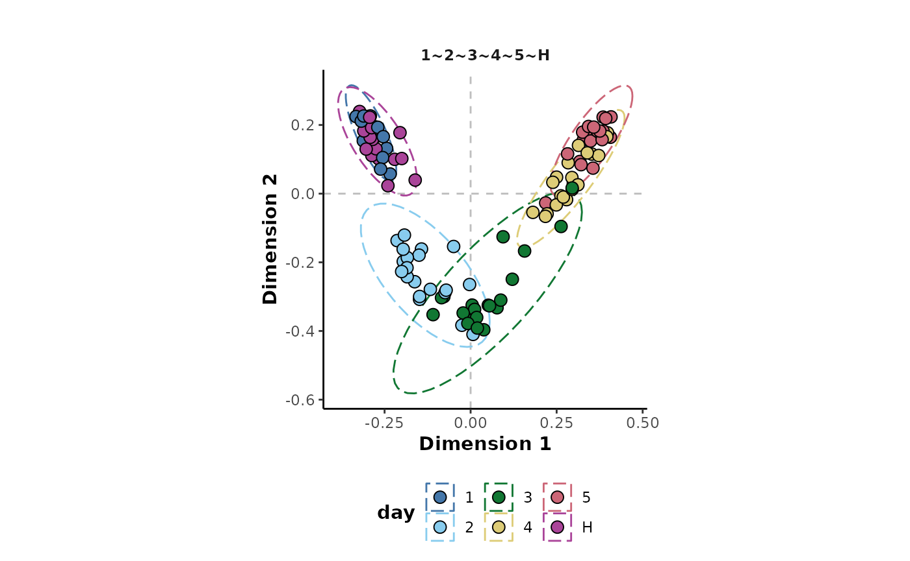
This shows that the model is able to discriminate highly between classes such as 5 and H. It is less able to discriminate more similar classes such as H and 1 or 4 and 5 whose confidence ellipses show a high degree of overlap. This makes sense in the context of this experiment as these are adjacent time points that are more likely to be similar than time points at each end of the experiment.
The ROC curves can also be plotted as shown below.
multinomial_rf %>%
plotROC()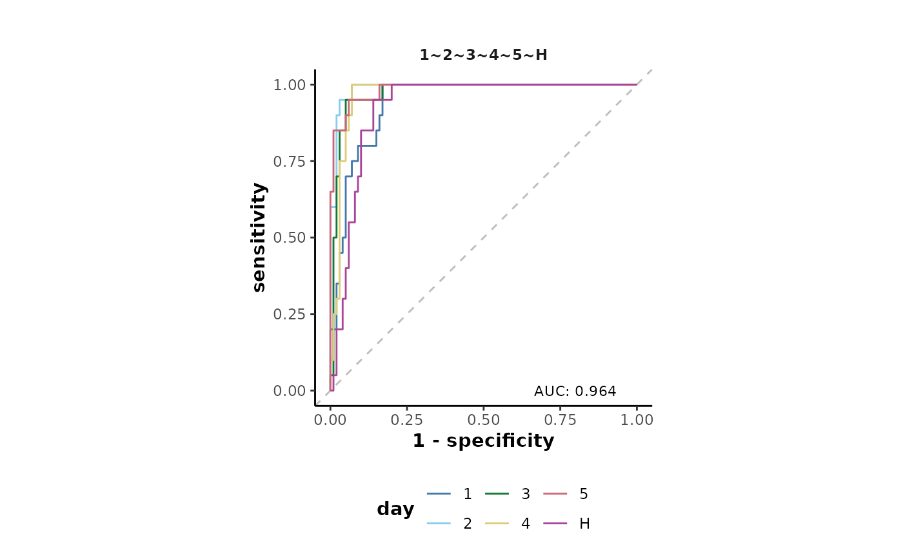
Classes with their line further from the central dashed line are those that were predicted with the greatest reliability by the model. This plot shows that both the H and 1 classes were least reliably predicted which is a result of their close proximity shown in the MDS plot previously.
Importance metrics can be used to identify the metabolome features that contribute most to the class discrimination in the model. The available importance metrics for this model are shown below.
importanceMetrics(multinomial_rf)
#> [1] "1" "2" "3"
#> [4] "4" "5" "FalsePositiveRate"
#> [7] "H" "MeanDecreaseAccuracy" "MeanDecreaseGini"
#> [10] "SelectionFrequency"Here, we will use the false positive rate metric with a threshold of below 0.05 to identify explanatory features for the day response variable.
multinomial_rf %>%
explanatoryFeatures(metric = 'FalsePositiveRate',
threshold = 0.05)
#> # A tibble: 121 × 5
#> Response Comparison Feature Metric Value
#> <chr> <chr> <chr> <chr> <dbl>
#> 1 day 1~2~3~4~5~H N341 FalsePositiveRate 1.02e-93
#> 2 day 1~2~3~4~5~H N133 FalsePositiveRate 7.38e-68
#> 3 day 1~2~3~4~5~H N163 FalsePositiveRate 3.59e-61
#> 4 day 1~2~3~4~5~H N439 FalsePositiveRate 1.07e-54
#> 5 day 1~2~3~4~5~H N342 FalsePositiveRate 3.19e-49
#> 6 day 1~2~3~4~5~H N377 FalsePositiveRate 3.19e-49
#> 7 day 1~2~3~4~5~H N171 FalsePositiveRate 6.26e-44
#> 8 day 1~2~3~4~5~H N497 FalsePositiveRate 6.11e-30
#> 9 day 1~2~3~4~5~H N146 FalsePositiveRate 2.74e-29
#> 10 day 1~2~3~4~5~H N195 FalsePositiveRate 7.16e-25
#> # … with 111 more rowsAs shown above there were a total of 121 explanatory features identified.
Within a multinomial experiment, it is also possible to specify the exact class comparisons to include, where it might not be suitable to compare all the classes at once using the comparisons argument. This should be specified as a named list, the corresponding to the cls argument. Each named element should then consist of a vector of comparisons, the classes to compare separated using the ~.
The following specifies two comparisons (H~1~2,H~1~5) for the day response variable and displays the performance metrics.
d %>%
randomForest(cls = 'day',
comparisons = list(day = c('H~1~2',
'H~1~5'))) %>%
metrics()
#> # A tibble: 8 × 5
#> Response Comparison .metric .estimator .estimate
#> <chr> <chr> <chr> <chr> <dbl>
#> 1 day H~1~2 accuracy multiclass 0.833
#> 2 day H~1~2 kap multiclass 0.75
#> 3 day H~1~5 accuracy multiclass 0.75
#> 4 day H~1~5 kap multiclass 0.625
#> 5 day H~1~2 roc_auc hand_till 0.906
#> 6 day H~1~5 roc_auc hand_till 0.909
#> 7 day H~1~2 margin <NA> 0.172
#> 8 day H~1~5 margin <NA> 0.320The MDS and ROC curve plots can also be plotted simultaneously for the two comparisons.
d %>%
randomForest(cls = 'day',
comparisons = list(day = c('H~1~2',
'H~1~5'))) %>%
{plotMDS(.,cls = 'day') +
plotROC(.) +
patchwork::plot_layout(ncol = 1)}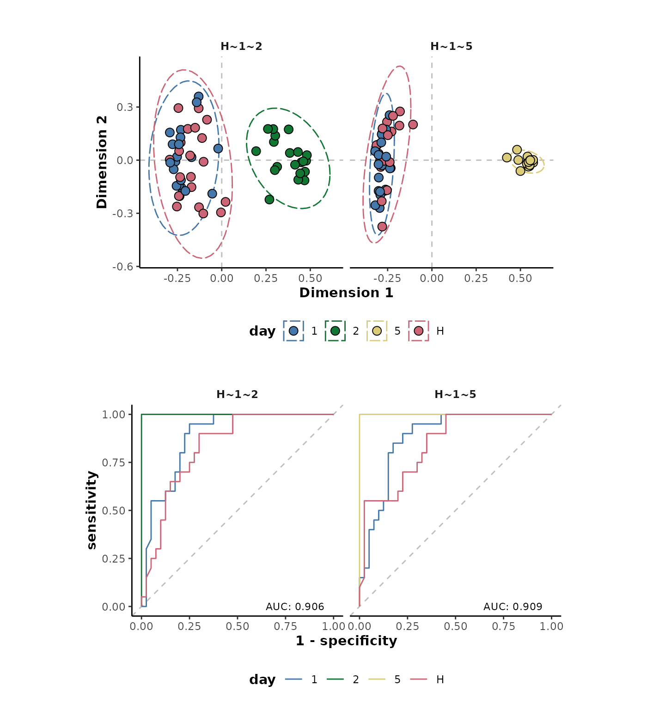
Similarly, it is also possible to model multiple response factors with a single random forest call by specifying a vector of response class information column names to the cls argument. In the following, both the name and day response factors will be analysed and the performance metrics returned in a single table.
d %>%
randomForest(cls = c('name','day')) %>%
metrics()
#> Warning: Classes with < 5 replicates removed: "11_3", "11_4", "11_5", "11_6",
#> "11_H", "12_1", "12_3", "12_6", "12_H", "13_1", "13_2", "13_3", "13_5", "13_6",
#> "13_H", "14_2", "14_3", "14_5", "14_6", "14_H", "15_1", "15_2", "15_4", "15_5",
#> "15_6", "15_H"
#> Unbalanced classes detected. Stratifying sample size to the smallest class size.
#> # A tibble: 8 × 5
#> Response Comparison .metric .estimator .estimate
#> <chr> <chr> <chr> <chr> <dbl>
#> 1 name 11_2~12_2~12_4~13_4~14_4~15_3 accuracy multiclass 0.35
#> 2 name 11_2~12_2~12_4~13_4~14_4~15_3 kap multiclass 0.212
#> 3 name 11_2~12_2~12_4~13_4~14_4~15_3 roc_auc hand_till 0.753
#> 4 name 11_2~12_2~12_4~13_4~14_4~15_3 margin <NA> -0.0485
#> 5 day 1~2~3~4~5~H accuracy multiclass 0.8
#> 6 day 1~2~3~4~5~H kap multiclass 0.76
#> 7 day 1~2~3~4~5~H roc_auc hand_till 0.964
#> 8 day 1~2~3~4~5~H margin <NA> 0.146The MDS plots can also be returned for both models simultaneously.
d %>%
randomForest(cls = c('name','day')) %>%
plotMDS()
#> Warning: Classes with < 5 replicates removed: "11_3", "11_4", "11_5", "11_6",
#> "11_H", "12_1", "12_3", "12_6", "12_H", "13_1", "13_2", "13_3", "13_5", "13_6",
#> "13_H", "14_2", "14_3", "14_5", "14_6", "14_H", "15_1", "15_2", "15_4", "15_5",
#> "15_6", "15_H"
#> Unbalanced classes detected. Stratifying sample size to the smallest class size.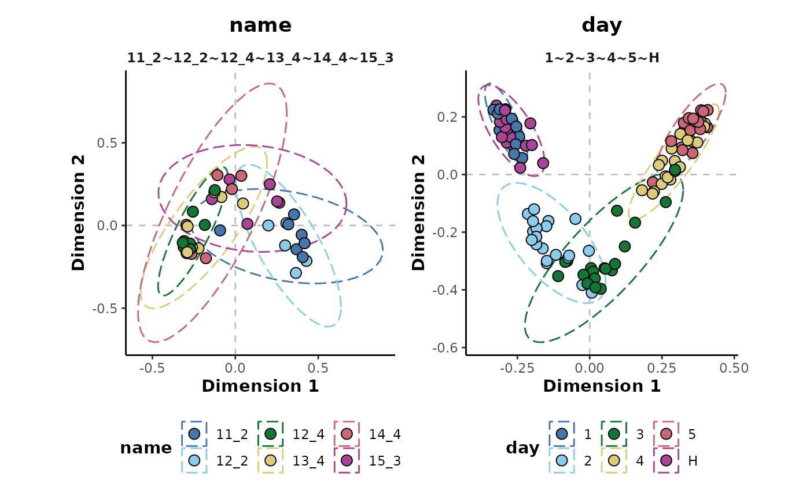
It may in some cases be preferable to analyse class comparisons as multiple binary comparisons.
The possible binary comparisons for a given response variable can be displayed using the binaryComparisons() method. Below shows the 15 comparisons for the day response variable.
binaryComparisons(d,cls = 'day')
#> [1] "1~2" "1~3" "1~4" "1~5" "1~H" "2~3" "2~4" "2~5" "2~H" "3~4" "3~5" "3~H"
#> [13] "4~5" "4~H" "5~H"For this example we will only use the binary comparisons containing the H class.
binary_comparisons <- binaryComparisons(d,cls = 'day') %>%
.[stringr::str_detect(.,'H')]The binary comparisons can then be performed using the following.
binary_rf <- d %>%
randomForest(cls = 'day',
comparisons = list(day = binary_comparisons))
print(binary_rf)
#>
#> Random forest classification
#>
#> Samples: 120
#> Features: 500
#> Response: day
#> # comparisons: 5To run all possible binary comparisons, the binary = TRUE argument could instead be used.
The MDS plots for each comparison can be visualised to inspect the comparisons.
binary_rf %>%
plotMDS(cls = 'day')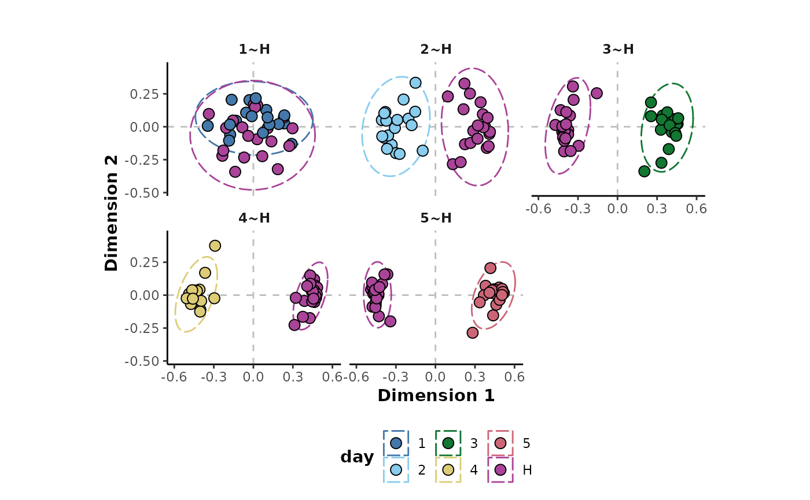
These plots show good separation in all the comparisons except H~1 which is also shown by the plot of the performance metrics below. Each of the comparisons are showing perfect performance for the accuracy, Cohen’s kappa and ROC-AUC metrics as well as very high margin values except for the H~1 comparison.
binary_rf %>%
plotMetrics()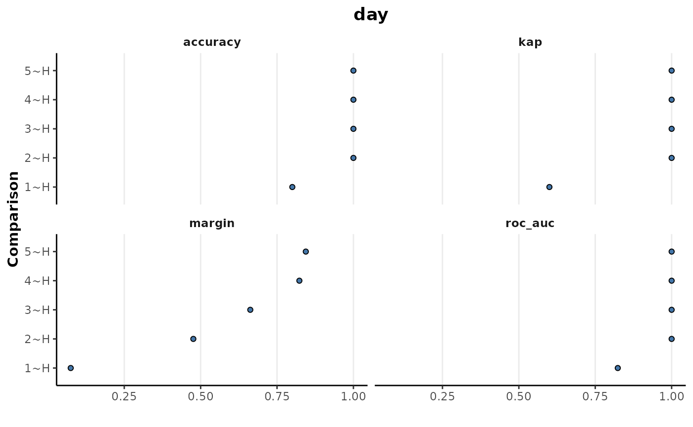
The explanatory features for these comparisons can be extracted as below using the false positive rate metric and a cut-off threshold of 0.05. This gives a total of 251 explanatory features.
binary_rf %>%
explanatoryFeatures(metric = 'FalsePositiveRate',
threshold = 0.05)
#> # A tibble: 251 × 5
#> Response Comparison Feature Metric Value
#> <chr> <chr> <chr> <chr> <dbl>
#> 1 day 2~H N341 FalsePositiveRate 7.34e-52
#> 2 day 2~H N439 FalsePositiveRate 1.80e-45
#> 3 day 3~H N342 FalsePositiveRate 2.71e-39
#> 4 day 2~H N327 FalsePositiveRate 1.06e-35
#> 5 day 3~H N439 FalsePositiveRate 1.06e-35
#> 6 day 2~H N477 FalsePositiveRate 1.60e-34
#> 7 day 3~H N377 FalsePositiveRate 1.60e-34
#> 8 day 4~H N477 FalsePositiveRate 7.40e-34
#> 9 day 2~H N447 FalsePositiveRate 6.48e-30
#> 10 day 3~H N163 FalsePositiveRate 6.48e-30
#> # … with 241 more rowsA heatmap of these explanatory features can be plotted to show their mean relative intensities across the experiment time points. Here, the classes are also refactored to customise the order of the classes on the x-axis.
refactor_cls <- clsExtract(binary_rf,
cls = 'day') %>%
factor(.,levels = c('H','1','2','3','4','5'))
binary_rf <- clsReplace(binary_rf,
value = refactor_cls,
cls = 'day')
binary_rf %>%
plotExplanatoryHeatmap(metric = 'FalsePositiveRate',
threshold = 0.05,
featureNames = TRUE)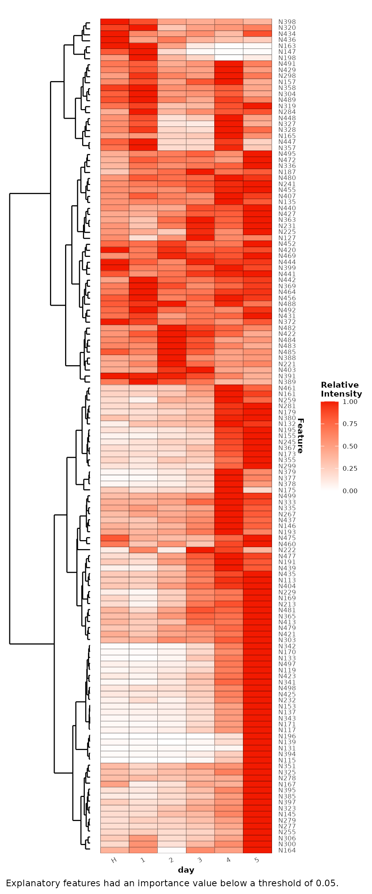
Random forest regression can be used to assess the extent of association of the metabolomic data with continuous response variables.
In this example, the extent of association of injection order with the example data will be assessed.
regression_rf <- d %>%
randomForest(cls = 'injorder')
print(regression_rf)
#>
#> Random forest regression
#>
#> Samples: 120
#> Features: 500
#> Response: injorderThe regression model performance metrics, based on the OOB prediction error, can be extracted using the following:
regression_rf %>%
metrics()
#> # A tibble: 5 × 4
#> Response .metric .estimator .estimate
#> <chr> <chr> <chr> <dbl>
#> 1 injorder rsq standard 0.476
#> 2 injorder mae standard 23.5
#> 3 injorder mape standard 154.
#> 4 injorder rmse standard 26.5
#> 5 injorder ccc standard 0.508These regression metrics include R2 (rsq), mean absolute error (mae), mean absolute percentage error (mape), root mean squared error (rmse) and the concordance correlation coefficient (ccc).
The R2 and concordance correlation coefficient metrics suggest that there is some association of features with the injection order, although this is weak. This is in agreement with mean absolute error metric that shows that on average, the injection order could only be predicted to an accuracy of 23 injection order positions.
The MDS plot belows the relative proximities of the samples based on this injection order regression model. This shows that for the most part, there is little correspondence of the sample positions with their injection order. However, there is a small grouping of samples towards the end of the run around sample ~99 to 120. It suggests that there could have been some analytical issues, for certain features, towards the end of the mass spectral analytical run.
regression_rf %>%
plotMDS(cls = NULL,
ellipses = FALSE,
label = 'injorder',
labelSize = 3)
#> Warning: ggrepel: 40 unlabeled data points (too many overlaps). Consider
#> increasing max.overlaps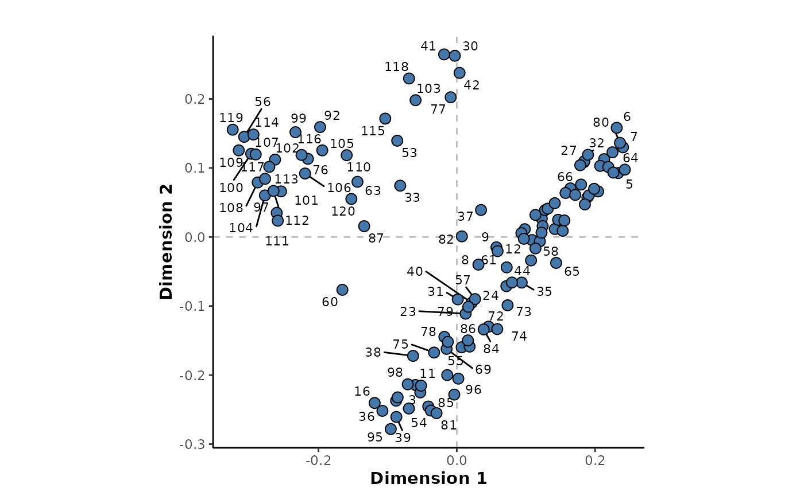
The available feature importance metrics for this regression model can be listed.
regression_rf %>%
importanceMetrics()
#> [1] "%IncMSE" "IncNodePurity"The feature importance metrics can be plotted to give an overview of their distribution. The following will plot the percentage increase in the mean squared error (%IncMSE) importance metric.
regression_rf %>%
plotImportance(metric = "%IncMSE",
rank = FALSE)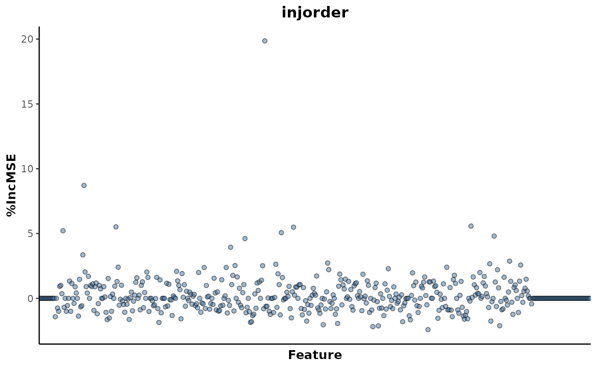
This shows that there are only a few features that are contributing to the association with injection order. These explanatory features can be extracted with the following, using a threshold of above 5.
regression_rf %>%
explanatoryFeatures(metric = '%IncMSE',
threshold = 5)
#> # A tibble: 7 × 4
#> Response Feature Metric Value
#> <chr> <chr> <chr> <dbl>
#> 1 injorder N283 %IncMSE 19.9
#> 2 injorder N135 %IncMSE 8.71
#> 3 injorder N451 %IncMSE 5.58
#> 4 injorder N161 %IncMSE 5.51
#> 5 injorder N306 %IncMSE 5.49
#> 6 injorder N118 %IncMSE 5.22
#> 7 injorder N297 %IncMSE 5.07This returned a total of 7 explanatory features above this threshold. The top ranked feature N283 can be plotted to investigate it’s trend in relation to injection order.
regression_rf %>%
plotFeature(feature = 'N283',
cls = 'injorder')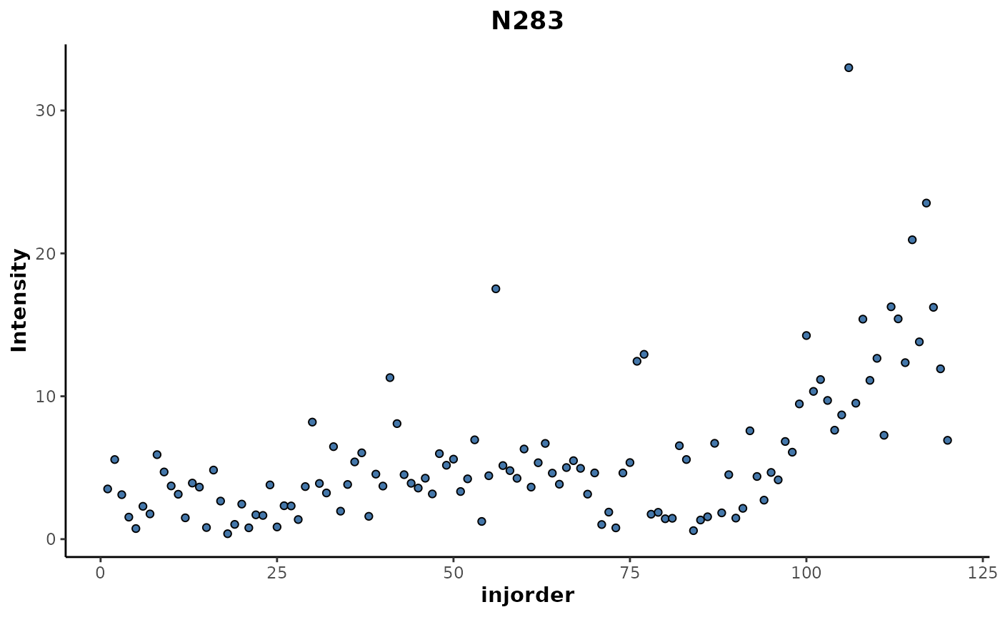
This shows an increase in the intensity of that feature for samples above 100 in the injection order which corresponds with the cluster that was seen in the MDS plot above.
Univariate methods select features, explanatory for response variables, with features tested on an individual basis. These methods offer simplicity and easy interpretation in their use, however they provide no information as to how features may interact.
The univariate methods currently available in metabolyseR include Welch’s t-test, analysis of variance (ANOVA) and linear regression. The following sections will provide brief examples of the use of each of these methods.
Welch’s t-test can be used to select explanatory metabolome features for binary comparisons of discrete variables. By default, all the possible binary comparisons for the categories of a response variable will be tested.
Below shows the possible binary comparisons for the day response variable for the example data set.
binaryComparisons(d,
cls = 'day')
#> [1] "1~2" "1~3" "1~4" "1~5" "1~H" "2~3" "2~4" "2~5" "2~H" "3~4" "3~5" "3~H"
#> [13] "4~5" "4~H" "5~H"For the following example, only a subset of comparisons will be tested. These will be selected by supplying a list to the comparisons argument.
ttest_analysis <- ttest(d,
cls = 'day',
comparisons = list(day = c('H~1',
'H~2',
'H~5')))
print(ttest_analysis)
#>
#> Univariate t-test analysis
#>
#> Samples: 120
#> Features: 500
#> Responses: day
#> # comparisons: 3The explanatory features that show a significant difference between the response categories can be extracted as shown below.
explanatoryFeatures(ttest_analysis,
threshold = 0.05)
#> # A tibble: 73 × 14
#> Response Comparison Feature estimate estimate1 estimate2 statistic p.value
#> <chr> <chr> <chr> <dbl> <dbl> <dbl> <dbl> <dbl>
#> 1 day H~5 N163 -735. 19.5 755. -13.8 1.43e-11
#> 2 day H~5 N341 2445. 2537. 92.6 13.6 2.88e-11
#> 3 day H~5 N133 1055. 1077. 21.9 13.0 5.44e-11
#> 4 day H~2 N341 200. 293. 92.6 10.6 1.38e-10
#> 5 day H~5 N171 62.6 64.7 2.15 11.9 2.62e-10
#> 6 day H~5 N119 17.2 17.9 0.763 11.0 8.54e-10
#> 7 day H~5 N342 243. 247. 4.13 10.8 1.42e- 9
#> 8 day H~5 N343 27.4 28.3 0.961 9.83 5.99e- 9
#> 9 day H~5 N377 152. 157. 5.05 9.81 6.75e- 9
#> 10 day H~5 N477 103. 129. 26.1 9.30 1.05e- 8
#> # … with 63 more rows, and 6 more variables: parameter <dbl>, conf.low <dbl>,
#> # conf.high <dbl>, method <chr>, alternative <chr>, adjusted.p.value <dbl>This will threshold the features based on their adjusted p-value, found in the adjusted.p.value column of the table. The results of all of the features can be returned using the importance() method.
A heat map of the explanatory features can be plotted to inspect the relative trends of the explanatory features in relation to the response variable.
plotExplanatoryHeatmap(ttest_analysis)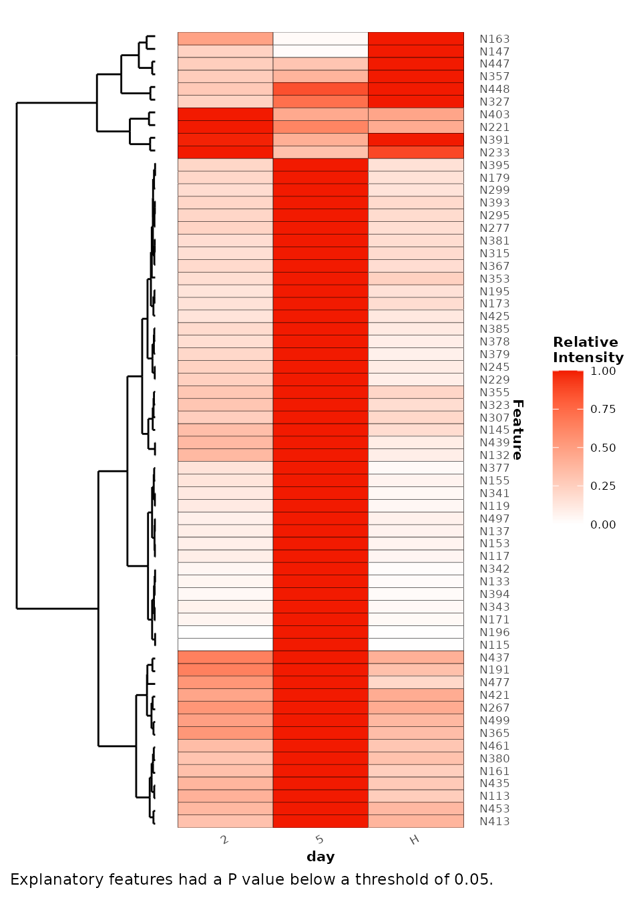
ANOVA can be used to select explanatory features for discrete response variables with 3 or more categories. The following example will compare all the categories in the day response variable. However, the comparisons argument can be used to select particular comparisons of interest.
anova_analysis <- anova(d,
cls = 'day')
print(anova_analysis)
#>
#> Univariate ANOVA analysis
#>
#> Samples: 120
#> Features: 500
#> Responses: day
#> # comparisons: 1The explanatory features that are significantly different between the categories can then be extracted.
explanatoryFeatures(anova_analysis,
threshold = 0.05)
#> # A tibble: 110 × 10
#> Response Comparison Feature term df sumsq meansq statistic p.value
#> <chr> <chr> <chr> <chr> <dbl> <dbl> <dbl> <dbl> <dbl>
#> 1 day 1~2~3~4~5~H N341 response 5 1.09e8 2.17e7 124. 1.90e-44
#> 2 day 1~2~3~4~5~H N163 response 5 1.25e7 2.51e6 113. 1.71e-42
#> 3 day 1~2~3~4~5~H N133 response 5 1.96e7 3.92e6 108. 1.71e-41
#> 4 day 1~2~3~4~5~H N171 response 5 6.29e4 1.26e4 88.8 1.16e-37
#> 5 day 1~2~3~4~5~H N342 response 5 1.04e6 2.07e5 85.1 7.61e-37
#> 6 day 1~2~3~4~5~H N343 response 5 1.19e4 2.38e3 66.1 4.43e-32
#> 7 day 1~2~3~4~5~H N119 response 5 4.92e3 9.83e2 53.8 2.07e-28
#> 8 day 1~2~3~4~5~H N497 response 5 1.10e5 2.20e4 49.6 4.83e-27
#> 9 day 1~2~3~4~5~H N137 response 5 6.32e3 1.26e3 39.9 1.59e-23
#> 10 day 1~2~3~4~5~H N277 response 5 6.31e4 1.26e4 39.1 3.14e-23
#> # … with 100 more rows, and 1 more variable: adjusted.p.value <dbl>The top ranked explanatory feature N341 can be plotted to inspect it’s trend relative to the day response variable.
plotFeature(anova_analysis,
feature = 'N341',
cls = 'day')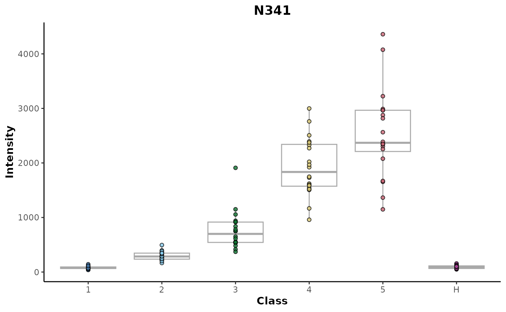
Univariate linear regression can be used to associate a continuous response variable with metabolome features. In the example below, the example data will be regressed against injection order to identify any linearly associated metabolome features.
lr_analysis <- linearRegression(d,
cls = 'injorder')
print(lr_analysis)
#>
#> Univariate linear regression analysis
#>
#> Samples: 120
#> Features: 500
#> Responses: injorderThe explanatory features can then be extracted.
explanatoryFeatures(lr_analysis)
#> # A tibble: 8 × 15
#> Response Feature r.squared adj.r.squared sigma statistic p.value df logLik
#> <chr> <chr> <dbl> <dbl> <dbl> <dbl> <dbl> <dbl> <dbl>
#> 1 injorder N283 0.310 0.304 4.27 53.0 4.10e-11 1 -343.
#> 2 injorder N135 0.165 0.157 78.7 23.2 4.31e- 6 1 -693.
#> 3 injorder N221 0.140 0.133 5.87 19.3 2.50e- 5 1 -382.
#> 4 injorder N473 0.135 0.127 7.24 18.3 3.78e- 5 1 -407.
#> 5 injorder N335 0.132 0.124 20.1 17.9 4.59e- 5 1 -529.
#> 6 injorder N452 0.120 0.112 4.00 16.0 1.10e- 4 1 -335.
#> 7 injorder N255 0.119 0.111 11.1 15.9 1.17e- 4 1 -458.
#> 8 injorder N267 0.118 0.111 26.4 15.8 1.22e- 4 1 -562.
#> # … with 6 more variables: AIC <dbl>, BIC <dbl>, deviance <dbl>,
#> # df.residual <int>, nobs <int>, adjusted.p.value <dbl>The top ranked explanatory feature N283 can be plotted to inspect inspects it’s association with injection order.
plotFeature(lr_analysis,
feature = 'N283',
cls = 'injorder')For routine analyses, the initial analysis parameters for pre-treatment of the data and then the modelling can be selected.
p <- analysisParameters(c('pre-treatment','modelling'))More specific parameters for pre-treatment of the example data can be declared using the following.
parameters(p,'pre-treatment') <- preTreatmentParameters(
list(
keep = 'classes',
occupancyFilter = 'maximum',
transform = 'TICnorm'
)
)The modellingMethods() function can be used to list the modelling methods that are currently available in metabolyseR.
modellingMethods()
#> [1] "anova" "ttest" "linearRegression" "randomForest"The modellingParameters() function can be used to retrieve the default parameters for specific modelling methods. Below, the default modelling parameters for the randomForest and ttest methods are specified.
parameters(p,'modelling') <- modellingParameters(c('randomForest','ttest'))The class parameters can the be universily specified for both the pre-treatment and modelling elements. For this example, the day response variable will be used with just the H and 2 classes.
changeParameter(p,'cls') <- 'day'
changeParameter(p,'classes') <- c('H','2')This gives the following parameters for the analysis.
p
#> Parameters:
#> pre-treatment
#> keep
#> classes
#> cls = day
#> classes = c("H", "2")
#> occupancyFilter
#> maximum
#> cls = day
#> occupancy = 2/3
#> transform
#> TICnorm
#>
#> modelling
#> randomForest
#> cls = day
#> rf = list()
#> reps = 1
#> binary = FALSE
#> comparisons = list()
#> perm = 0
#> returnModels = FALSE
#> seed = 1234
#> ttest
#> cls = day
#> pAdjust = bonferroni
#> comparisons = list()
#> returnModels = FALSEThe analysis can then be executed.
analysis <- metabolyse(abr1$neg,abr1$fact,p)
#>
#> metabolyseR v0.14.3 Tue Sep 14 10:01:00 2021
#> ________________________________________________________________________________
#> Parameters:
#> pre-treatment
#> keep
#> classes
#> cls = day
#> classes = c("H", "2")
#> occupancyFilter
#> maximum
#> cls = day
#> occupancy = 2/3
#> transform
#> TICnorm
#>
#> modelling
#> randomForest
#> cls = day
#> rf = list()
#> reps = 1
#> binary = FALSE
#> comparisons = list()
#> perm = 0
#> returnModels = FALSE
#> seed = 1234
#> ttest
#> cls = day
#> pAdjust = bonferroni
#> comparisons = list()
#> returnModels = FALSE
#> ________________________________________________________________________________
#> Pre-treatment …
Pre-treatment ✓ [6.2S]
#> Modelling …
Modelling ✓ [4.2S]
#> ________________________________________________________________________________
#>
#> Complete! [10.4S]The results for the modelling can be specifically extracted using the following.
analysisResults(analysis,'modelling')
#> $randomForest
#>
#> Random forest classification
#>
#> Samples: 40
#> Features: 1713
#> Response: day
#> # comparisons: 1
#>
#>
#> $ttest
#>
#> Univariate t-test analysis
#>
#> Samples: 40
#> Features: 1713
#> Responses: day
#> # comparisons: 1This returns the results as a list containing the modelling results objects for each specified method.
Alternatively, the modelling results can be assess directly from the Analysis object. Below shows the extraction of the explanatory features, using default parameters for each method, with the results returned in a single table.
explanatory_features <- analysis %>%
explanatoryFeatures()
print(explanatory_features)
#> # A tibble: 100 × 17
#> Method Response Comparison Feature Metric Value estimate estimate1
#> <chr> <chr> <chr> <chr> <chr> <dbl> <dbl> <dbl>
#> 1 randomForest day 2~H N341 FalsePo… 8.06e-28 NA NA
#> 2 randomForest day 2~H N377 FalsePo… 5.70e-18 NA NA
#> 3 randomForest day 2~H N447 FalsePo… 5.70e-18 NA NA
#> 4 randomForest day 2~H N579 FalsePo… 5.70e-18 NA NA
#> 5 randomForest day 2~H N1084 FalsePo… 1.19e-16 NA NA
#> 6 randomForest day 2~H N327 FalsePo… 2.33e-15 NA NA
#> 7 randomForest day 2~H N580 FalsePo… 4.32e-14 NA NA
#> 8 randomForest day 2~H N1083 FalsePo… 7.49e-13 NA NA
#> 9 randomForest day 2~H N1085 FalsePo… 7.49e-13 NA NA
#> 10 randomForest day 2~H N503 FalsePo… 7.49e-13 NA NA
#> # … with 90 more rows, and 9 more variables: estimate2 <dbl>, statistic <dbl>,
#> # p.value <dbl>, parameter <dbl>, conf.low <dbl>, conf.high <dbl>,
#> # method <chr>, alternative <chr>, adjusted.p.value <dbl>Heat maps of the explanatory features can also be plotted for both the modelling methods.
plotExplanatoryHeatmap(analysis) %>%
patchwork::wrap_plots()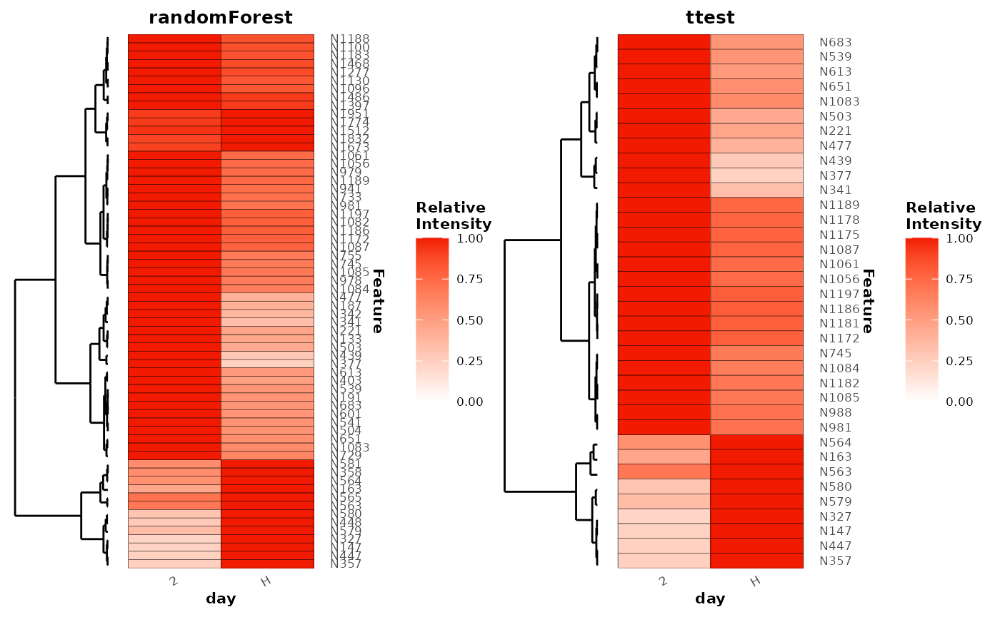